VirtualBox安装CentOS7
安装前准备
安装VirtualBox：自行百度安装
准备镜像：可以用 CentOS官网，CentOS中文官网 下载CentOS镜像
我这里下载的是 CentOS 7：http://mirrors.nju.edu.cn/centos/7.9.2009/isos/x86_64/CentOS-7-x86_64-Minimal-2009.iso
CentOS 7提供了三种ISO镜像文件：
DVD ISO 标准安装版，桌面版
Everything ISO 标准安装版的补充，增加了大量的应用软件
Minimal ISO 精简版，自带的应用软件最少，生产环境推荐使用
Minimal版本优点：
- 节省系统资源，磁盘空间占用小
- 自带软件少，系统纯净运行更稳定
- 需要的软件包可以自行安装
创建虚拟机
1：点击新建
2：输入名称：centos7；文件夹：是保存虚拟机系统的文件；类型：选择Linux；版本：选择Other Linux(64-bit)
3：选择虚拟机的内存大小：根据自己需求选择，我这里选择了2G
4：创建虚拟机的硬盘：根据自己需求选择，可以稍后创建，现在创建，我选择了：现在创建
5：选择虚拟机硬盘的类型：根据自己需求选择，我选择了默认的VDI类型
6：选择虚拟机硬盘的大小：根据自己需求选择，我选择了动态分配
7：选择虚拟机硬盘的位置：根据自己需求选择，我选择了虚拟硬盘放在D盘
8：选择虚拟机硬盘的大小：根据自己需求选择，我选择了硬盘大小最大为20GB
9：创建完成后，可以选中当前虚拟机
10：点击设置
11：可以对创建好的虚拟机再次调整参数，比如我这里将虚拟机的CPU调整为了2核
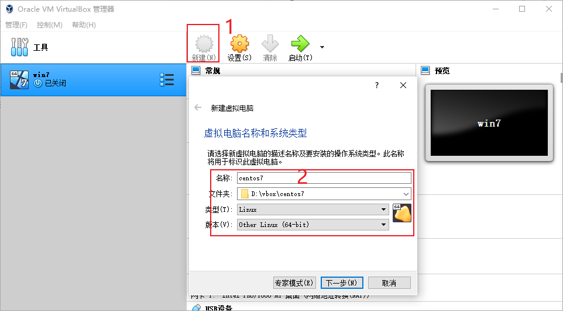 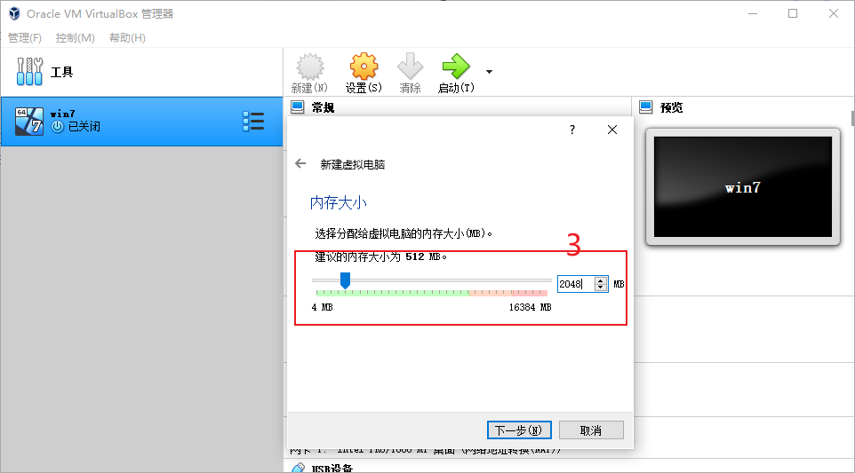 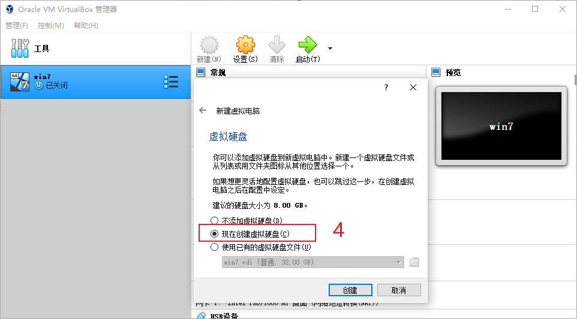 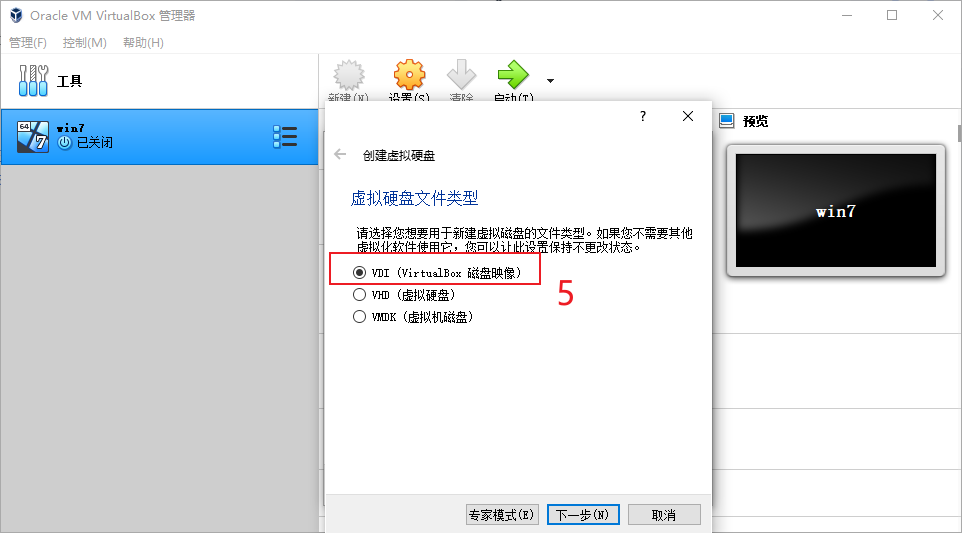 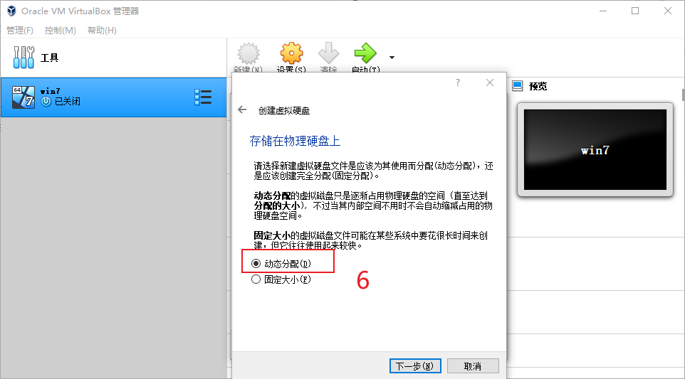 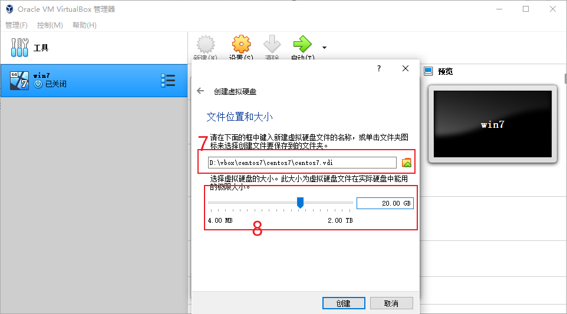 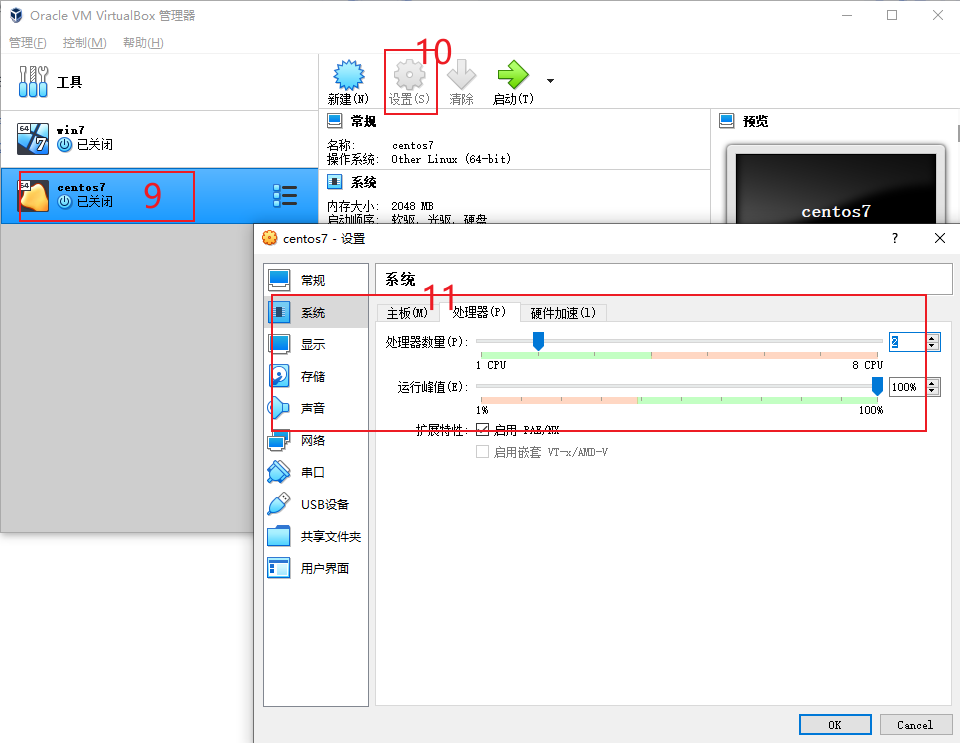启动虚拟机
1：选中虚拟机
2：点击启动，点击之后，稍等片刻，会弹出虚拟机启动窗口
3：在虚拟机窗口，选择启动镜像，点击文件夹图标
4：选择 注册
5：找到我们之前下载的 CentOS7 的镜像，开启启动
6：通过键盘，移动上下左右箭头，选择 Install CentOS 7，回车
7：选择中文，继续
8：选择安装位置
9：将安装位置选中为我们创建的虚拟硬盘
10：完成
11：开始安装
12：创建root密码，我这里将root设置为：root
13：创建用户，根据自己的需求选择是否创建本地用户，我这里就不创建了，不创建的话，默认就只有一个root用户
14：安装完成，开始重启，重启之后，就可以登录了。
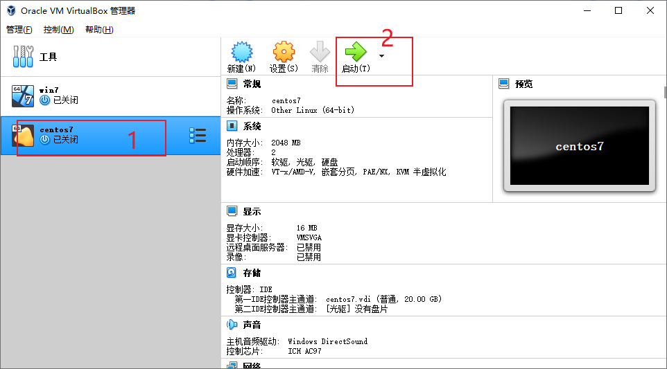 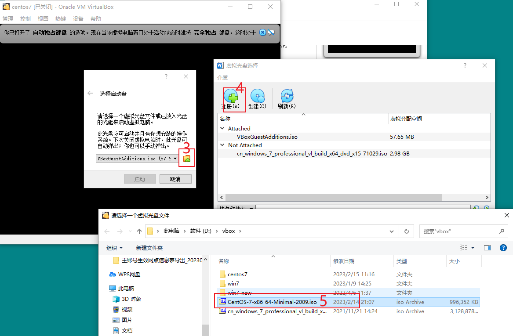 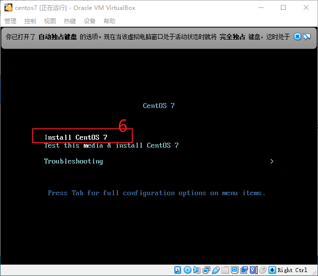 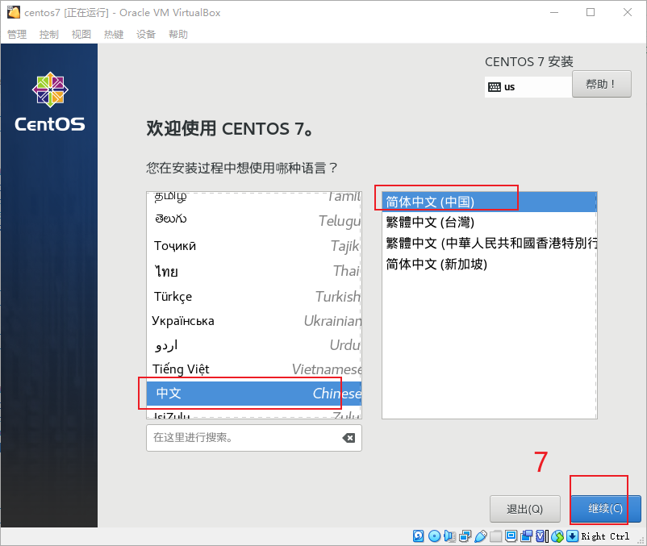 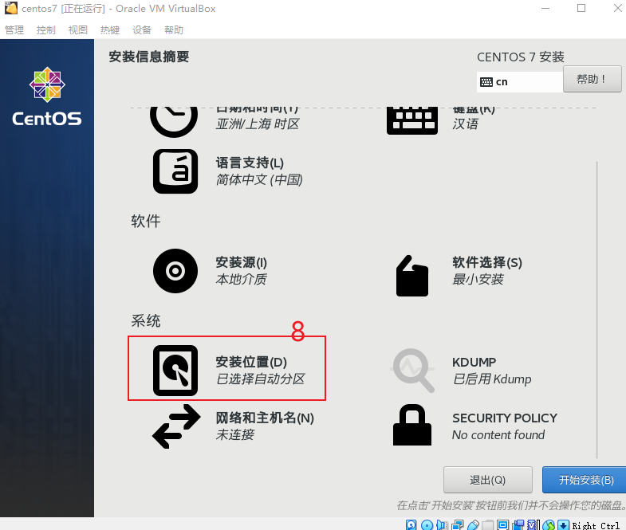 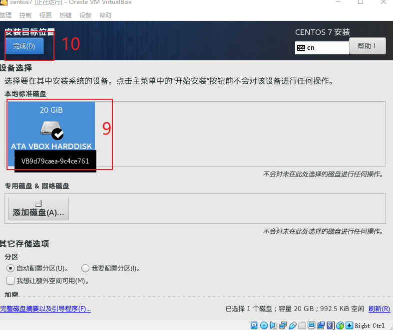 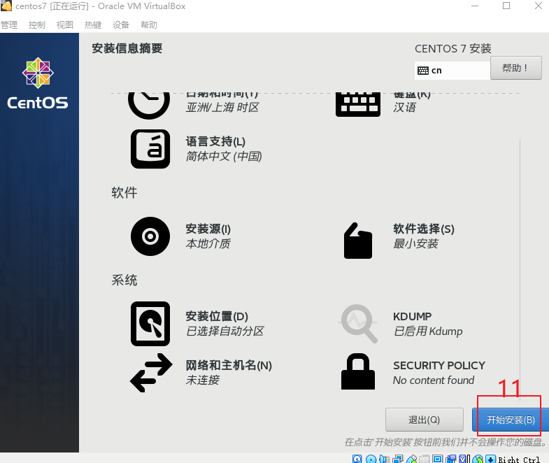 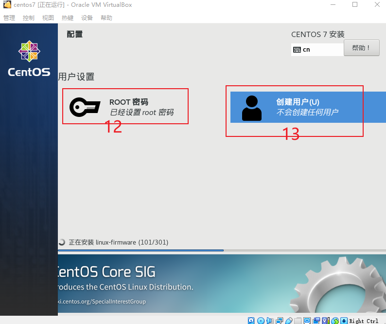 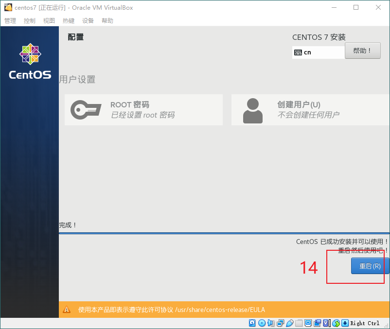 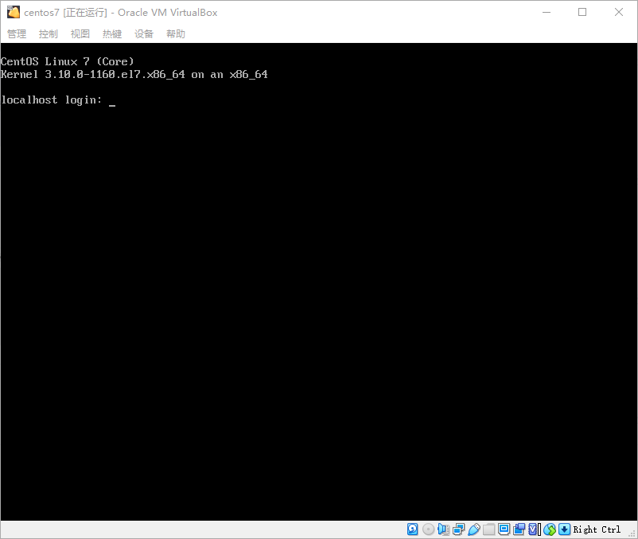